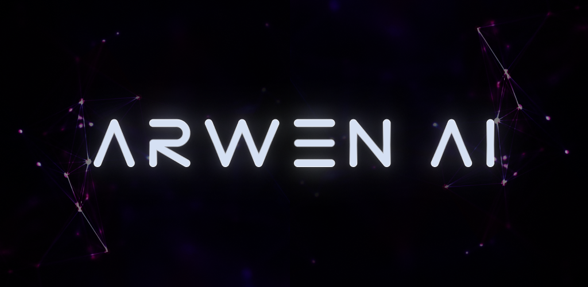

Our apps all designed to help users to do some routine tasks quicker. You can download productivity apps from our websites or from Google Play Store. We highly recommend ‘Super Shortcuts‘ for all Android users. It is simple and helpful for everyone.
Arwen AI: Better Productivity
Arwen AI: One Of A Kind Multitasking AI, Helps Users Achieve Better Productivity.
Floating Multitasking with Beautiful, Advanced AI Powered Assistant for Better Lifestyle, Productivity.
Possibility of the algorithms used in the application is endless. Arwen will start learning your behavior. Simply she tries to suggest your next actions. which will lead to bigger Psychology.
Smart Home Appliance Auto Pilot; TV, Lights, Soundbars, Air Conditioner & etc - Story Generator - Image Generator - Calling - Texting
It is one of a kind Multitasking AI, helps users achieve better productivity. Floating Multitasking with Beautiful, Advanced AI Powered Assistant for Better Lifestyle, Productivity. 🧪 Test Public Beta ➡️ https://GeeksEmpire.co/ArwenAI
Floating Multitasking ⚡ Open All Apps In Floating Windows From Floating Shortcuts. Also, You Can Have Floating Widgets and Floating Folders
We should be a Multitasking Master for today’s busy life. While we cannot do anything about how fast the time flows, we still can control how we manage it. Being more productive helps us to live full capacity.
Even when we work with several applications, there are many small actions that may affect our time management. Time is much more valuable for us to spend it in switching among apps!
Imagine you need to take note on Google Keep Notes while you are in an online meeting of Zoom. For this purpose, you have to do 8 or even more Steps! 1️⃣ To switch in to Keep Note you should close Zoom, 2️⃣ Back to the App Drawer 3️⃣ or Home Screen 4️⃣ Find Keep Note among many applications. 5️⃣ Click for opening and taking note 6️⃣ Then close note taking 7️⃣ After that you can come back to Zoom! 8️⃣ Oops! You Should take another note! OMG! Repeating this path again & again is too waste of the golden time! 😤 😴
You do these actions many times per day with different applications without releasing how much time you are wasting.
⚠️ Google Translate should translate a word while reading an article. checking the monthly bill need a calculator application at the same time and … . Do you have any solution to save these times?
Shortcuts are created for this purpose, but they are not enough to rescue the times. You only see them on the home page. They make the screen crowded and unorganized. Also, you still have to make several actions to switch among apps.
There is a great solution for these problems. Having shortcuts of applications floating...!
⚠️ Can you chat on WhatsApp, search on Google and prepare work report in Office Word simultaneously? No. Of Course Not!
If you can do that you certainly become a Multitasker Master! Multitasking will help you to save more time.
How Does This Application (Float It) Helps You? Float It makes Floating Shortcuts of all applications to have a quick access to use them and open applications in Floating Windows.
Let's go back to the first problem. The Zoom is open and the keep note icon is floating and ready to open and taking note!
What About the Second Issue? Also, Float It help you to search on Google, type in Word Office and chat in WhatsApp at same time.
In this example, you’ve created Floating Shortcut of these three applications. By tapping on each shortcut it will open in a floating window. These floating windows are moveable in free form and resizable easily.
How Does It Work? (It Works So Easy & Quick) First Step... Open Float It application and Click to create Floating Shortcuts of applications. That’s It! 😎
Also, there is a fast and lite Search Engine to find an app quickly Usually all of us have many applications. So, to find one of them in a long list is frustrating. Search Engine is a very helpful tool. By this feature you can save lots of times! You want to share a photo of your enjoyable moments in social medias. It's enough to search their name to create Floating Shortcuts in one second.
Protect Your Digital Life Privacy and security is very important to all of us. we should protect our personal messages, important data, online wallets & etc. You can lock every Floating Shortcut with a pattern or finger print.
Floating Widgets Widgets can be very handy as they allow you to put your favorite applications on your home screen in order to quickly access them. Now if they be floating, you can see and use them everywhere.
Sticky Edge This feature helps you to arrange all Floating Shortcuts quickly in one side of screen.
Floating Multitasking Tutorials https://GeeksEmpire.co/FloatItReviews
Multitasking With A Shortcut
Do A Great Multitasking; Replace Several Applications Shortcut & Folders with One Super Shortcut & Protect Your Privacy 🦸 🦸♂️ To Do A Great Multitasking
Shortcuts are the most popular way to have quick access to applications and help you to perform simple multitasking.
They make your home page so crowded. On the other hand, cluttering the Home page make you confused and decrease your productivity.
Wouldn’t be nice to have one shortcut that allows access to other shortcuts instead of having dirty home screen.
Several shortcuts will clutter up your wallpaper and make your personal customization ugly.
Imagine When you are playing a game, you face a certain scene in the game that you need to record it immediately. You go to home page to find the recorder among many shortcuts in a cluttered home page! It will be wonderful if you can run the screen recorder with one action that would be called Multitasking.
Super Shortcuts doesn't just organize your shortcuts. It helps you save your valuable time and be a Super Multitasker... 💫
Multiple Task At Once; Super Split Shortcuts is an awesome feature to open two applications together. For example, it helps you to watch the trailer in the YouTube when you want to install a new game at the same time.
Stay Focused; It's tricky to do multitasking & concentrate! Well you have to do... When you go to a home page full of shortcuts to launch an app, for a few seconds you forget what you were looking for among all those shortcuts. Super Shortcuts helps you stay focused and find the app quickly with a clear list of shortcuts.
Protect Your Privacy; Security and privacy are important for every user. With Super Shortcuts you can set a password for your games and apps. so that no one can open them. by this feature you'll be safe of the malwares, spies and others.
Neat & Tidy; Neat & Tidy person need neat and Tidy solution. You can make a folder as a super shortcut to have a better arrangement and categories.
Even More Beautiful Home Screen; Your theme customization and icons pack can apply in super Shortcuts too.
Watch Super Shortcuts On Our YouTube Channel; https://GeeksEmpire.co/SuperShortcutsReviews
How To Find Premium Applications? - Achieve Better Productivity and Find High Quality Applications and High Quality Games.
We have searched for you 🙂 We have found the best applications for you 👍 We have tested them for you 👌
💠 Don't you want to be sure about the quality & security of the applications you about to pay...? Our collections assure you about those critical criteria.
💎 The best quality of graphical interface, user experience & features ✨ 💎 The best applications in all categories 🔵 💎 The best applications & games that respect your privacy 🔏
There are always some awesome applications & games that you cannot find them easily. You have to search, scroll deep down! You have to waste your time & money to find the best applications.
Sometimes you can not even trust rates & reviews due to all those marketing methods.
What about frustration of picking a movie to watch & enjoy? 🤦♀️ 💎 We covered that too. 😍 Excellent entertaining movies.
So we found the solution & built it...! We build a storefront to showcase all premium quality content 💎
We have tested thousands of applications so far & selected premium applications for our storefront. We are testing more & more to keep our storefront up to date.
💎 And of course we built a premium & luxurious digital store with a beautiful & gorgeous appearance to welcome premium & luxury users. 💎